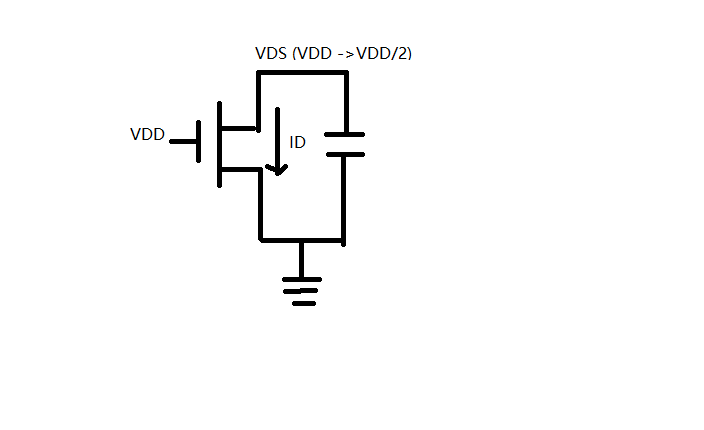
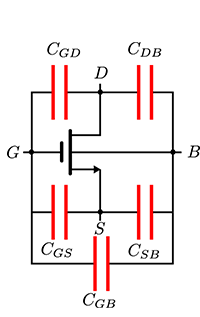

1 The Diode
1.1 Significance
- Reverse-biased diodes are quite omnipresent in today’s MOS digital IC
In the design of digital circuits, we want the current to flow along the channel, that is from the drain of the transistor to the source of the transistor horizontally rather than from the source or drain of the transistor to the substrate. Therefore in this case, biasing the diode reversely seems very necessary, which directly impacts the behavior of the device. - Diodes can also be wielded to protect the input devices of an IC against Electrostatic Discharge(ESD)
Static electricity is very common in our daily life. For example, if we walk on a synthetic carpet in a room with the relative humidity of 80% or more, a voltage potential up to 1.5KV or more will be accumulated. Therefore, we can accumulate a voltage of 1.5KV or more in our finger and if we touch an object, we can find sparks jumping from our finger. Likewise, if we touch the chip with our finger, the chip may be punctured at such high voltage. Then we can utilize a diode to connect a pad with ground and the current will flow through this diode to the ground. So we use diode to protect our chip from punctured by the ESD.
1.2 Depletion Region
We all know the fundamental of the generation of P-N junction and the reason is the concentration gradient. There is a depletion region at the P-N junction and this region is also called space charged region or high impedance region. We can calculate the built-in potential of this region as follows:
$$ \phi_0 = \phi_T\ln\left( \frac {N_A N_D} {n_i^2} \right) \tag{1.1} $$
where NA stands for the acceptor concentration and ND stands for the donor concentration and ni stands for the intrinsic carrier concentration in a pure sample of semiconductor and its value is $1.5 \times 10^{10} cm^{-3}$ and $\phi_T$ is thermal voltage representing the voltage when the temperature equals 300K and it can be represented by the following expression:
$$ \phi_T = \frac {kT} q = 26mV\ (T = 300K) \tag{1.2} $$
where k stands for Boltzmann constant. From the formula (1.2), we can get that at room temperature the built-in potential of silicon normally ranges from 0.6V to 0.8V and that of germanium ranges from 0.2V to 0.4V.
1.3 Static behavior
Static behavior is robust and integrate and unsensitive to the noise.
1.3.1 Forward Bias
In this case, the two terminals of the PN diode are applied forward biased voltage and the built-in voltage potential is counteracted by the external forward biased voltage. Therefore, the depletion region will shrink and the width of this region will be reduced. In this scenario, the diffusion current dominates the drift current.
While in Digital ICs, this should be avoided because we don’t want the other current flow in the diode except the current flowing along the channel.
1.3.2 Reverse Bias
In this case, the two terminals of the PN diode are applied reverse biased voltage and then the width of built-in potential of the depletion region will be widen and the electrical field will be strengthened. At this time, the drift current will dominate the diffusion current and because the current is generated by the minority carrier, the current is quite weak. It’s fair to say that there is hardly no current flow through the PN junction.
In digital ICs, this is the dominant operation mode because there is no current flowing from source or drain to the substrate.
1.3.3 Ideal diode equation
The current through the PN diode equals ID which can be expressed as follows:
$$ I_D = I_S(e^{V_D \over \phi_T} - 1) \tag{1.3} $$
where IS stands for saturation current. This equation indicates that diode current acts as a function of the bias voltage.
1.3.4 First-order diode model
From the above equation ,we can find this ideal diode model is accurate but nonlinear so it is unwieldy for hand calculation. Therefore we introduce first-order diode model to simplify the calculation. In this case, we assume the voltage drop of the diode lies in a narrow range from 0.6V to 0.8V. The result of this model is as same as that of the ideal one so it is accurate enough for hand calculation and it is handy enough for manual manipulation.
1.4 Dynamic behavior
Dynamic behavior stands for the performance.
1.4.1 Capacitor of the depletion region
If we apply forward biased voltage on the terminals of the PN diode, and the depletion region will shrink. If we increase the voltage the width of depletion region will reduce otherwise increase. Here, depletion-region width can be calculated in the following formula:
$$ W_j = \sqrt {(\frac {2\varepsilon_{si}} {q} \frac {N_A + N_D} {N_A N_D})(\phi_0 - V_D)} \tag{1.4}$$
We can also calculate the depletion-region charge with the equation as follows:
$$ Q_j = A_D \sqrt {(2\varepsilon_{si} q \frac {N_A N_D} {N_A + N_D})(\phi_0 - V_D)} \tag{1.5} $$
where AD stands for the area of the plate. Then we can calculate the depletion region capacitance with the following equation:
$$ C_j = \frac {\varepsilon_{si} A_D} {W_j} = - \frac {dQ_j} {dV_D} = \frac {A_D \sqrt {(2\varepsilon_{si} q \frac {N_A N_D} {N_A + N_D})\phi_0^{-1}}} {\sqrt {1 - \frac {V_D} {\phi_0}}} = \frac {C _ {j0}} {(1 - \frac {V_D}{\phi_0})^{\frac 1 2}} \tag{1.6} $$
where ϵsi stands for the permittivity of dielectric and Cj0 stands for the numerator of the front equation. Cj0 is actually the junction capacitance on the 0 bias voltage.
There is a generic expression for the junction capacitance as follows:
$$ C_j = A_D \times \frac {C _ {j0}} {(1 - \frac {V_D}{\phi_0})^m} \tag{1.7} $$
where m stands for the grading efficient. If the transition from one type of doping to another type of doping is abrupt, m equals 0.5 and if that is gradual, m equals 0.33. *Note that *This expression is accurate as long as VD<ϕ0 otherwise should be revised.
1.4.2 Equivalent capacitance module
From the above expression of the junction capacitance, we can find that the equation is too unwieldy to calculate by hand. Therefore, we need to introduce an equivalent, linear capacitance Ceq which makes sure the same amount of charge is transferred for a given voltage swing from Vhigh to Vlow as would be predicted by the nonlinear module. We can define Ceq as follows:
$$ C _ {eq} = \frac { \Delta Q_j} {\Delta V_D} = \frac {Q_j (V _ {high}) - Q_j(V _ {low})} {V _ {high} - V _ {low}} = \frac 1 {V _ {high} - V _ {low}} \int_{V _ {low}}^{V _ {high}}C_j(V)dV = K _ {eq} C _ {j0} \tag{1.8} $$
where Keq named as linearizing factor or voltage equivalent factor can be expressed as follows (0 < Keq < 1):
$$ K _ {eq} = \frac {-\phi_0^m} {(V _ {high} - V _ {low})(1 - m)} [(\phi_0 - V _ {high})^{1 - m} - (\phi_0 - V _ {low}) ^ {1 - m}] \tag{1.9} $$
where m stands for the grading efficient stated above. For abrupt junction (m = 0.5), the expression of Keq can be rewritten as follows:
$$ K _ {eq} = \frac {-2 \sqrt {\phi_0}} {(V _ {high} - V _ {low})} [\sqrt {\phi_0 - V _ {high}} - \sqrt{\phi_0 - V _ {low}]} \tag{1.10} $$
Therefore we can use this equation to calculate the capacitance very handily and the precision of this model is high enough for first order analysis.
1.5 Secondary Effects
1.5.1 Resister in the doped neutral regions
In reality, we find that the current flowing in the PN diode is smaller than the one predicted by the model. That is because in the neutral region, there are still some resistances there. So this effect can be modeled by adding a resistors is series with P and N region.
1.5.2 Avalanche breakdown
If we apply the reverse biased voltage on the terminals of PN diode and we increase the reverse voltage, sometimes we can find the current suddenly increases which is induced by the avalanche breakdown.
The reason why avalanche breakdown appears is that carriers become more and more excited as we increase the voltage and carriers collide with immobile atoms which will generate more carriers which may generate large current. This effect is not destructive and if the reverse bias is removed, the effect will disappear. But if we maintain high reverse voltage for a long time, high current level and high heat dissipation might cause permanent damage to the device.
1.6 SPICE Diode Model
Figure (1-1) shows the SPICE diode model.
From the foil, we can see there is a resistor in series with the current source and a capacitor parallel with the current source.
The expression of nonlinear current source hear is a bit different from what we talked above.
$$ I_j = I_S(e^{V_j \over {n\phi_T}} - 1) \tag{1.11} $$
where n stands for the emission coefficient indicating the recombination of the carriers in depletion region. There is another expression of the nonlinear capacitance as formula(1.12) shows.
$$ C_j = \frac {C _ {j0}} {(1 - \frac {V_j}{\phi_0})^m} + \frac {\tau_T} {\phi_T} I_S e^{\frac {V_j} {n\phi_T}} \tag{1.12} $$
where the last term in the above equation stands for excess minority carrier charge and can be neglected under reverse-bias conditions.
The following table records the SPICE parameters of the diode.
| Parameter Name | Symbol | SPICE Name | Units | Default Value |
|---|---|---|---|---|
| Saturation current | IS | IS | A | 1.0 E-14 |
| Emission coefficient | n | N | - | 1 |
| Series resistance | RS | RS | Ω | 0 |
| Transit time | τT | TT | sec | 0 |
| Zero-bias junction capacitance | Cj0 | CJ0 | F | 0 |
| Grading coefficient | m | M | - | 0.5 |
| Junction potential | φ0 | VJ | V | 1 |
2 The MOSFET
2.1 Introduction
2.1.1 Structure
MOSFET is an acronym and the full name is Mental Oxide Semiconductor Field Effect Transistor. People usually regard the MOS as a three-terminal device, however, the MOS actually has four terminals which are source, drain, gate and bulk respectively. Besides these terminals, there are also field oxide and gate oxide.
How can we identify which terminal is source and which terminal is drain. The easiest way to recognize is to compare the voltage potential of these two terminals. In term of NMOS, if the voltage of this terminal is higher than another one ,then this terminal is drain of the transistor otherwise this terminal is source of the transistor. On the contrary, in terms of PMOS, the method is opposite to that of the NMOS.
2.1.2 Significance
MOSFETs are widely used in digital circuit design as well as in analog circuit design. The main advantages if MOS can be briefly listed as follows:
- Function as a switch
- Few parasitic effects
- High integration density
- Simple manufacturing process
- Insensitive to the variation of the process
The significance of body is to modulate the device characteristics and parameters.
2.1.3 Essence
Actually, MOS transistor is nothing more than a switch from view of digital IC. The reason is that when the transistor is off, the resistance is infinite otherwise when the transistor is on, the resistance is finite. Therefore, MOS transistor can be regarded as switch.
If VGS < VT, then the transistor is off otherwise the transistor is on. Viewing the transistor as switch can help us simplify the analysis of complex circuits.
2.2 Static Behavior
As same as the analysis of the diode, static behavior indicates the robustness, integrity, low sensitiveness to the noise of the circuits.
2.2.1 The formation of conducting channel
At first, if we do not apply voltage on the transistor, there is no conducting channel. In terms of NMOS, we apply a positive voltage between the gate and source and connect both bulk and drain to the ground.
If we increase the VGS gradually, then the holes in the substrate beside the gate will be repelled to the bottom of the substrate and immobile negative charged ions will stay put. At this time, depletion region appears between gate oxide and the substrate. If we increase the VGS further at the point where the voltage potential at the surface is equal to two times of Fermi potential , then the electron in the n+ region will be extracted to the channel. At this time when strong inversion occurs, threshold voltage VT represents the value of VGS and this area is inverted to the n region.
Note that the VT here is different from the switch threshold or gate threshold VM.
2.2.2 Calculation of the threshold voltage(cut-off region)
If VSB = 0, VT can be expressed as:
$$ V_T = \phi_{GC} - 2\phi_F - \frac {Q _ {B0}} {C _ {ox}} - \frac {Q _ {ox}} {C _ {ox}} - \frac {Q_I} {C _ {ox}} \tag{2.1} $$
where φGC stands for the difference in work function between gate and substrate and φF stands for Fermi potential which normally equals -0.3V and QB0 stands for the charge of impurities trapped at the surface between gate and oxide and Qox stands for gate oxide charge and QI stands for dosage of ions implanted for the threshold adjustment.
All of these terms in this expression are material constants which is a function of manufacturing process and as IC designers, there is no need to care these parameters.
If VSB > 0, VT can be expressed as:
$$ V_T = V _ {T0} + \gamma(\sqrt {|{-2\phi_F + V _ {SB}} |} - \sqrt {|{-2\phi_F}|}) \tag{2.2} $$
where γ stands for the body effect coefficient with the unite of V0.5. From this expression, we can find that if VSB ≠ 0, then VT will be increased. This equation expresses the impact of body-bias effect on the threshold voltage of the MOS transistor and IC designers must care.
2.2.3 Long channel device
2.2.3.1 Linear region
If we apply voltage at drain and make sure VDS is small and VGS > VT, then VGS - V(x) exceeds VT all along the channel. Therefore Induced channel charge per unit area at point x can be expressed as:
$$ Q_i(x) = -C _ {ox} [V _ {GS} - V(x) - V_T] \ \ \ C _ {ox} = \frac {\varepsilon_{ox}} {t _ {ox}} \tag{2.3} $$
where Cox stands for the gate oxide capacitance per unit area and ϵox stands for the permittivity of material dielectric and tox stands for the thickness of gate oxide.
The Electron velocity can be expressed as:
$$ v_n = - \mu_n \xi (x) = \mu_n \frac {dV} {dx} \tag{2.4} $$
where ξ(x) is the strength of the electrical field. Then channel current can be expressed as:
$$ I_D = -v_n(x) Q_i (x) W \tag{2.5} $$
and combine the above three equations(2.3 - 2.5):
$$ I_D dx = \mu_n C _ {ox} W(V _ {gs} - V_T - V)dV \tag{2.6} $$
and then we integrate the length and voltage of this equation then we can get the IV relation as:
$$ I_D = \mu_n C _ {ox} \frac W L [(V _ {GS} - V_T)V _ {DS} - \frac {V _ {DS}^2} {2}] \ \ \ \ k_n^{‘}= \mu_n C _ {ox} \ \ \ \ k_n = k_n^{‘} \frac W L \tag{2.7} $$
where kn‘ stands for process transconductance and Kn stands for gain factor. Normally, VDS2 can be neglected for simplicity due to small VDS.
2.2.3.2 Saturation region
If we increase VDS further, at some time VGS - V(x) is less than VT and the channel will be pinched off at some point and the length of the channel is reduced. At this time, we can express the IV relation in following equations:
$$ \begin{split} I_D &= k_n^{‘} \frac W L [(V _ {GS} - V_T)(V _ {GS} - V_T) - \frac {(V _ {GS} - V_T) ^2} {2}] = \frac {k_n^{‘}} 2 \frac W {L^{‘}}(V _ {GS} - V_T) ^2 \\[3ex]
&= \frac 1 {1 - \frac {\Delta L} L} \frac {k_n^{‘}} 2 \frac W L (V _ {GS} - V_T) ^2 = \frac {k_n^{‘}} 2 \frac W L (V _ {GS} - V_T) ^2 (1 + \lambda V _ {DS}) \ \ \ L^{‘} = L - \Delta L \end{split} \tag{2.8} $$
and this effect is called channel length modulation effect.
In terms of long channel device, here we summarize the above IV relation as:
$$ I_D =
\begin{cases}
0, & (V _ {GS} \le V_T) \\[3ex]
\mu_n C _ {ox} \frac W L [(V _ {GS} - V_T)V _ {DS} - \frac {V _ {DS}^2} {2}] \approx \mu_n C _ {ox} \frac W L [(V _ {GS} - V_T)V _ {DS}], &(V _ {GS} \gt V_T, V _ {DS} \lt V _ {GS} - V_T) \\[3ex]
\frac {k_n^{‘}} 2 \frac W L (V _ {GS} - V_T) ^2 (1 + \lambda V _ {DS}), &(V _ {GS} \gt V_T, V _ {DS} \gt V _ {gs} - V_T)
\end{cases} \tag{2.9} $$
2.2.4 Short channel device
The difference between long channel device and short channel device is the length of the channel. Therefore, there is some difference between long channel device and short channel device as for static behavior.
2.2.4.1 IV relation
Note: when the electrical field along the channel reaches a critical value ξc, the velocity of carriers tends to saturate due to scattering effects. Normally, this value is about 1.5V/um to 2V/um which depends on the doping levels and vertical electrical field applied.
Normally, usat is equal to 105m/s and the velocity of electron should be revised as:
$$ v =
\begin{cases}
\frac {\mu_n \xi} {1 + \frac \xi {\xi_c}}, & \xi \le \xi_c \\[3ex]
v _ {sat}, & \xi \ge \xi_c
\end{cases} \tag{2.10} $$
Then we plug the above equation to the formula(2.5) then we can get the modified ID in resistive region as:
$$ \begin{split} I_D &= \frac {\mu_n C _ {ox}} {1 + \frac {V _ {DS}} {\xi_c L}} \frac W L [(V _ {GS} - V_T)V _ {DS} - \frac {V _ {DS}^2} {2}] \ \ \ \xi \le \xi_c \\[3ex]
&= \mu_n C _ {ox} \frac W L [(V _ {GS} - V_T)V _ {DS} - \frac {V _ {DS}^2} {2}] \kappa(V _ {DS}) \end{split} \tag{2.11} $$
in which κ(V) can be expressed as:
$$ \kappa (V) = \frac 1 {1 + \frac {V _ {DS}} {\xi_c L}} \tag{2.12} $$
From this equation, we can figure out:
- For long channel device or VDS is small, κ approaches 1
- For short channel device, κ < 1 due to small L
Then we can also get ID expression in velocity saturation region as:
$$ \begin{split} I _ {DSAT} &= v _ {sat} C _ {ox} W (V _ {GT} - V _ {DSAT}) \\[3ex]
&= \kappa (V _ {DSAT}) \mu_n C _ {ox} \frac W L [(V _ {GS} - V_T)V _ {DSAT} - \frac {V _ {DSAT}^2} {2}] \ \ \ \xi \ge \xi_c \end{split} \tag{2.13} $$
At this time, $ v _ {sat} = \frac {\xi_c \mu_n} 2 $, we can plug it into above equation and yields:
$$ V _ {DSAT} = \kappa(V _ {GT})V _ {GT} \tag{2.14} $$
in which $V _ {GT} = V _ {GS} - V_T $.
Therefore, we can get some very important conclusions as follows: - For short channel device and for large enough values VGT, κ(VGT) is substantially less than 1 so VDSAT = κ(VGT)VGT < VGT
- Short channel device enters saturation before VDS reaches VGS - VT
- Short channel device experiences an extended saturation region than long channel device
2.2.4.2 Transition of the state
In this section, we will briefly introduce the state transition process and these state are listed as follows .
- VGS > VT, VDS = 0
At this time, the transistor is located in resistive region but there is no current flowing through the channel. If we increase VDS and the transistor will enter the second state. - VGS > VT, VDS > 0, $ \frac {V _ {DS}} L \lt \xi_c, \frac {V _ {DS}} L \lt \frac {V _ {GS} - V_T} L $
At this time, the transistor is still located in resistive region and there is current flowing along the channel. If we increase VDS further and transistor may enter either the third state or fourth state first. It depends on the following condition. - VGS > VT, $ \xi_c \le \frac {V _ {DS}} L \lt \frac {V _ {GS} - V_T} L $
At this time, the transistor enters the velocity saturation first and there is no pinch-off point in the channel but the velocity of the electrons reaches saturation. - VGS > VT, $ \frac {V _ {GS} - V_T} L \le \frac {V _ {DS}} L \le \xi_c $
At this time, the transistor enters the traditional saturation first and there is pinch-off point in the channel but the velocity of electrons can sill increase with VDS
Note: whether the transistor enters 3 or 4 first is determined by $\frac {V _ {DS}} L $ exceeds $ \xi_c$ or $\frac {V _ {GS} - V_T} L \ $ first.
By comparing the IDSAT of long channel device with that of short channel device, we can find that IDSAT is proportional to the square of supply voltage for long channel device while IDSAT is linear to the supply voltage which indicating that if we apply the same voltage at the transistor, there will be larger current in the long channel device.
2.2.4.3 Simplify the calculation
First, we should assume that
- Velocity saturates abruptly at ξc and we can get formula(2.15).
$$ v =
\begin{cases}
\mu_n \xi, & \xi \le \xi_c \\[3ex]
v _ {sat} = \mu_n \xi_c, & \xi \ge \xi_c
\end{cases} \tag{2.15} $$ - VDSAT at which the critical electrical filed is reached and velocity saturation comes into play is constant and we can get formula(2.16).
$$ V _ {DSAT} \approx L \xi_c = \frac {L v _ {sat}} {\mu_n} \tag{2.16} $$
Then current equations for the resistive region remains unchanged from long channel one. Once VDSAT is reached, channel current will saturate abruptly as follows:
$$ \begin{split}
I _ {DSAT} &= I_D (V _ {DS} = V _ {DSAT}) \\[3ex]
&= \mu_n C _ {ox} \frac W L [(V _ {GS} - V_T)V _ {DSAT} - \frac {V _ {DSAT}^2} {2}] \\[3ex]
&= v _ {sat} C _ {ox} W (V _ {GS} - V_T - \frac {V _ {DSAT}} 2)
\end{split} \tag{2.17} $$
2.2.4.4 A unified model
For wieldy manual analysis, there is a unified model for short channel device.
$$ I_D =
\begin{cases}
0,& V _ {GT} \le 0 \\[3ex]
k_n^{‘} \frac W L \left[ V _ {GT} V _ {min} - \frac {V _ {min}^2} 2 \right] (1 + \lambda V _ {DS}), &V _ {GT} \gt 0 \end{cases} \tag{2.18} $$
$$ \begin{cases}
V _ {min} = min(V _ {GT}, V _ {DS}, V _ {DSAT}) \\[3ex]
V _ {GT} = V _ {GS} - V_T \\[3ex]
V_T = V _ {T0} + \gamma(\sqrt {|{-2\phi_F + V _ {SB}} |} - \sqrt {|{-2\phi_F}|})
\end{cases} \tag{2.19} $$
The following table provides some parameters for manual model of generic 0.25μm CMOS process(minimum length device).
| VT0 (V) | γ(V0.5) | VDSAT(V) | κ’(A/V2) | λ(V |
|
|---|---|---|---|---|---|
| NMOS | 0.43 | 0.4 | 0.63 | 115×10-6 | 0.06 |
| PMOS | -04 | -0.4 | -1 | -30×10-6 | -0.1 |
Here we summarize the conditions to enter different working regions.
| Working conditions | |
|---|---|
| Cut-off region | VGS < VT |
| Resistive region | VGS > VT, VDS < VDSAT, VDS < VGT |
| Traditional Saturation region | VGS > VT, VDS ≥ VGT, VDSAT ≥ VGT |
| Velocity saturation region | VGS > VT, VDS > VDSAT, VGT > VDSAT |
2.2.5 Switch mode (Resistor)
In terms of the transistor, since Ron is time varying, nonlinear and dependent on the operation point of the transistor, It’s attractive to replace Ron with constant and linear resistance Req.
Therefore, we can calculate the resistance over the period we care and the equivalent resistance Req can be expressed as follows.
$$ \begin{split} R _ {eq} &= average _ {t = t_1…t_2} \left( R _ {on}(t) \right) = \frac 1 {t_2 - t_1} \int_{t_1}^{t_2} \frac {V _ {DS}} {I_D(t)} dt \\[3ex]
&= \frac 1 2 \left( R _ {on}(t_1) + R _ {on}(t_2) \right) \end{split} \tag{2.20} $$
For example, look at the figure(2-1) where a capacitor is discharged through an NMOS transistor. We can calculate the equivalent resistance during this period.

The resistance can be calculated by integrating over the period as follows.
$$ R _ {eq} = \frac 1 {- \frac {V _ {DD}} 2} \int_{V _ {DD}}^{\frac {V _ {DD}} 2} \frac {V _ {DS}} {I _ {DSAT}(1 + \lambda V _ {DS})}dV _ {DS} \approx \frac 3 4 \frac {V _ {DD}} {I _ {DSAT}}(1 - \frac 7 9 \lambda V _ {DD}) \tag{2.21} $$
The resistance can also be calculated by compute the average resistance of the start point and the end point.
$$ R _ {eq} = \frac 1 2 (\frac {V _ {DD}} {I _ {DSAT}(1 + \lambda V _ {DD})} + \frac {\frac {V _ {DD}} 2} {I _ {DSAT}(1 + \lambda \frac {V _ {DD}} 2 )} ) \approx \frac 3 4 \frac {V _ {DD}} {I _ {DSAT}}(1 - \frac 5 6 \lambda V _ {DD}) \tag{2.22} $$
From the expression(2.22), three conclusions can be drawn as follows:
- The resistance is inversely proportional to W/L;
- For VDD >> VT + VDSAT/2, the resistance becomes virtually independent of the supply voltage;
- Once the supply voltage approaches VT, the resistance dramatically increases.
2.3 Dynamic behavior
In this section, we will briefly introduce MOS intrinsic capacitance which can be divided into three parts including MOS structure capacitance, channel capacitance and junction capacitance.
2.3.1 MOS structure capacitance
This capacitance originates from basic MOS structure.
Because of the process, the source and drain of the transistor will diffuse a little bit by amount of xd below polysilicon gate and this phenomenon is called lateral diffusion below polysilicon gate. Therefore, there will be the overlap capacitance between the gate oxide and diffusion area.
$$ \begin{split} C _ {GSO} = C _ {GDO} = C _ {ox}x_dW = C_oW \\[3ex]
\left (C _ {ox} = \frac {\varepsilon_{ox}} {t _ {ox}},\ \ C_o = C _ {ox}x_d \right) \end{split} \tag{2.23} $$
where CGSO means the overlap capacitance between the gate and source and CGDO means the overlap capacitance between the gate and source and Co is overlap capacitance per unit transistor width.
2.3.2 Channel capacitance
This capacitance originates from channel charge.
The following table summarizes the average distribution of channel capacitance of MOS Transistor.
| Operation Region | CGCB | CGCS | CGCD | CGC |
|---|---|---|---|---|
| Cutoff | CoxWLeff | 0 | 0 | CoxWLeff |
| Resistive | 0 | CoxWLeff/2 | CoxWLeff/2 | CoxWLeff |
| Saturation | 0 | (2/3)CoxWLeff | 0 | (2/3)CoxWLeff |
2.3.3 Junction capacitance
This capacitance originates from the depletion regions of the reverse-biased PN-junctions of drain and source. As we know, the junction capacitance consists of four parts which are the capacitance of the bottom-plate and that of three side walls. Here, we can use the following equation to express the junction capacitance.
$$ C _ {diff} = C _ {bottom} + C _ {SW} = C_j \times AREA + C _ {JSW} \times PERIMETER = C_jL_sW + C _ {jsw}(2L_s + W) \tag{2.24} $$
where Cj stands for junction capacitance per unit area of the bottom plate and Cjsw stands for the junction capacitance per unit perimeter of the side wall.

From this foil, we can get all the capacitances of the MOS transistor.
| CGS | CGD | CSB | CGB | CDB |
|---|---|---|---|---|
| CGSO + CGCS | CGDO + CGCD | CSdiff | CGCB | CDdiff |
The following table summarizes some capacitances in 0.25um CMOS process.
| Cox (fF/μm2) |
Co (fF/μm) |
Cj (fF/μm2) |
mj | φb (V) |
Cjsw (fF/μm) |
mjsw | φbsw (V) |
|
|---|---|---|---|---|---|---|---|---|
| NMOS | 6 | 0.31 | 2 | 0.5 | 0.9 | 0.28 | 0.44 | 0.9 |
| PMOS | 6 | 0.27 | 1.9 | 0.48 | 0.9 | 0.22 | 0.32 | 0.9 |
2.4 Secondary Effect (Sub-Micron MOS Transistor)
For sub-micron MOS transistor, there are mainly two secondary effects and we will briefly introduce these two effects in this section.
2.4.1 Threshold Variations
There are two factors which can influence the threshold of MOS transistor.
The first factor is the shrinking length. The depletion regions of the source and reverse-biased drain junction become more important with channel length scaling down. Therefore, we do not need high supply voltage to turn on the transistor and the threshold voltage will decrease with channel length scaling down.
The second one is VDS. The rising of the VDS increases the width of the drain-junction depletion region and then the threshold voltage decreases accordingly and this kind of effect is called the drain-induced barrier lowering.
2.4.2 Subthreshold conduction
Ideally, when VGS < VT, there is no current flowing through the transistor and the transistor is turned off. However, in reality, at this point is not turned off completely and there is still small current flowing in the transistor and this current is called as leakage current. And this current can be expressed as the following equation.
$$ I_D = I_S e^{\frac {\frac {V _ {GS}} {nkT}} q} (1 - e^{\frac {\frac {V _ {DS}} {kT}} q} )(1 + \lambda V _ {DS}) \tag{2.25} $$
And the slope factor S is ΔVGS for ID2/ID1 = 10(Unit: mV/decade) and can be expressed as follows:
$$ S = \frac {nkT} q ln(10) \tag{2.26} $$
and the typical value for S is from 60 to 100 mV/decade.
Due to this effect, we can find out the transition from on to off is not abrupt and instead is gradual and this effect contributes to the increase of power consumption and is still a big issue for IC design.
All above is the brief introduction to the Diode, MOS Transistor and some of the characteristics they possess. Thank you for your reading.